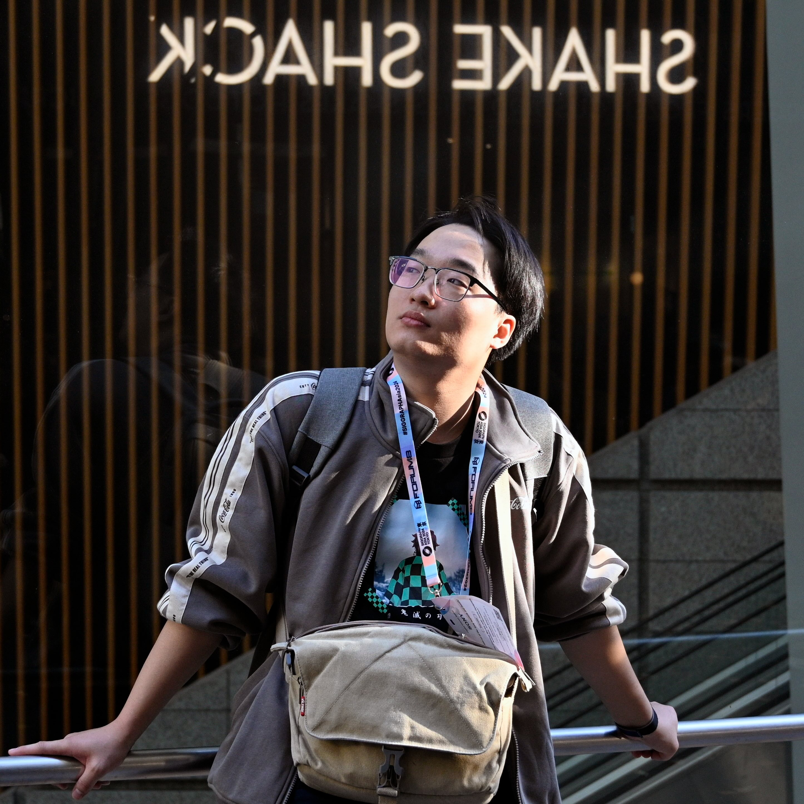
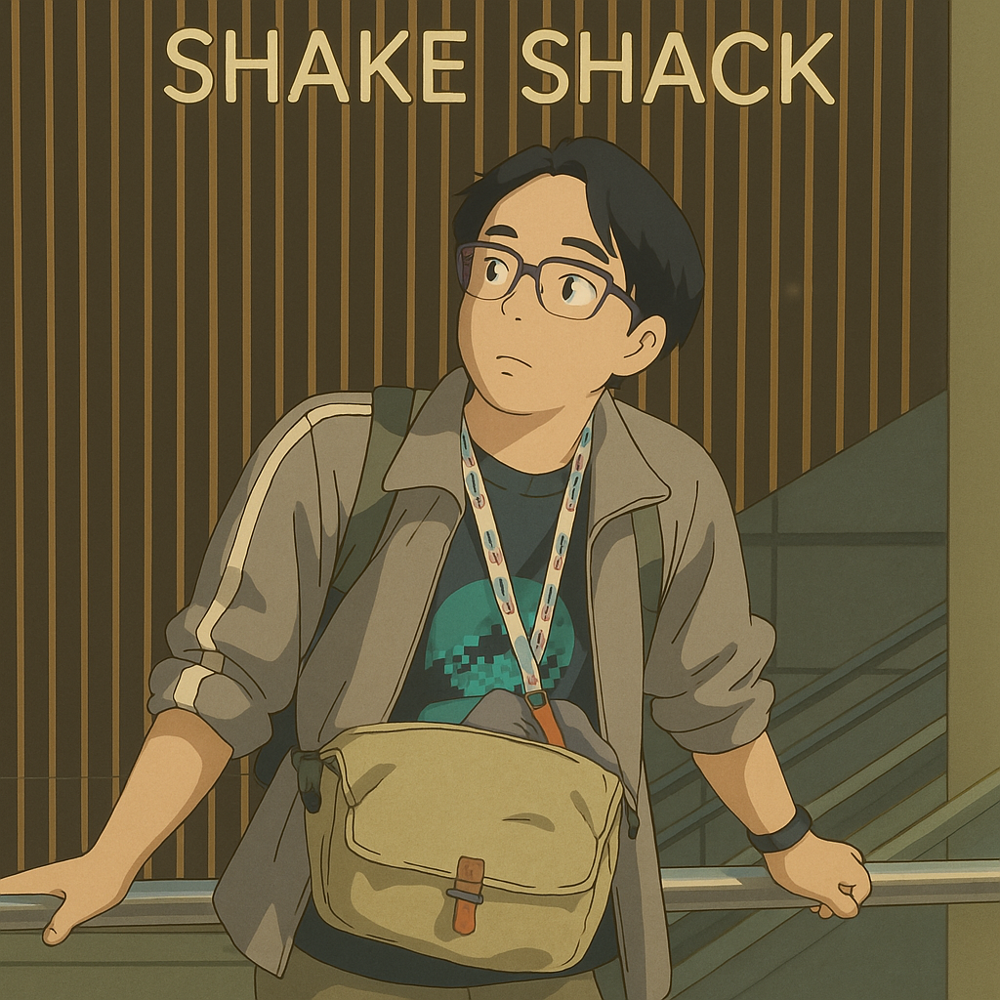
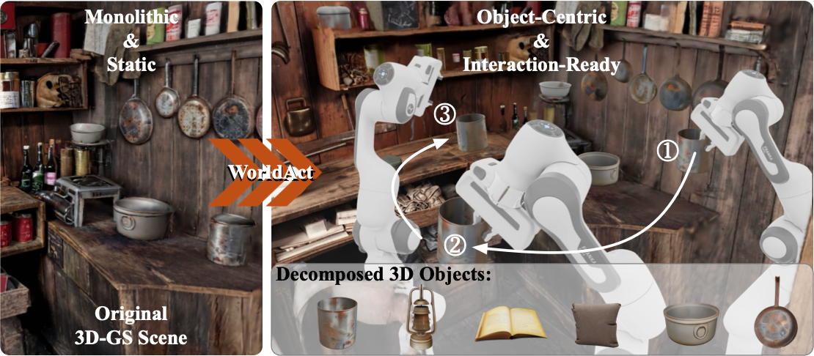

Loading 3D model...
3D model failed to load. Open GLB
Asset 1. A single-image 3D generation of a moment captured during SIGGRAPH Asia 2024 in Tokyo.
Chen Yang (杨辰)About: |
  |
|
Research Vision: Email / Research Map / CV (EN) / CV (中文) / Google Scholar / DBLP / ORCID / GitHub |
|
Highlights |
Input‑Aligned 3D Generation
Infinite 3D World Generation
Four‑View 3D Reconstruction
Fast 4D Tissue Reconstruction
News2026-10: Our latest work SUPRA-Tex is now fully open source! From a single image, it builds a PBR 3D asset whose textures stay locked to the reference, down to fine lettering and patterns. Trained only on open-source data, it is preferred over five commercial systems (Hunyuan3D, Rodin, Tripo, Meshy, and Hi3D) for both visual quality and input alignment across 512 paired human evaluations. Project / Paper / Code / Model weights / Live demo. 2026-08: SCULPT is released, introducing subtractive composition for 3D part generation. 2026-06: Pixel Artisan PRO (像素匠PRO) surpasses 40,000 users within 50 hours of launch. 2026-06: The Xiaoyi 3D foundation model, whose R&D I own, powers our team product Xiaoyi 3D × Pixel Artisan PRO (小艺3D × 像素匠PRO), which debuted at HDC 2026 and received the HarmonyOS Innovative Premium App Award. 2026-06: Snap-Snap is accepted to TCSVT. 2026-05: WorldAct, a project I initiated and mentored, is released and now accepted to NeurIPS 2026. It turns monolithic 3D worlds into interaction-ready, object-centric scenes. 2026-03: TIGON is accepted to CVPR 2026. 2026-03: UniLat3D is accepted to Findings of CVPR 2026. 2026-01: The WorldGrow Gallery is now online. 2025-11: WorldGrow is accepted to AAAI 2026 as an Oral presentation. 2025-11: Three papers are accepted to AAAI 2026. 2025-07: GaussianObject surpasses 1,200 GitHub stars. 2025-06: Our book Hands-on Computer Vision is published in English and Chinese (动手学计算机视觉). Written for computer vision practitioners and researchers, it can also serve as a textbook for computer vision courses in AI-related programs. 2025-02: GaussianObject surpasses 1,000 GitHub stars. 2024-09: GaussianObject is accepted by TOG(SIGGRAPH Asia 2024). 2024-06: EndoGSLAM is accepted by MICCAI 2024. 2024-04: ForPlane is accepted by TMI. 2023-10: LerPlane receives MICCAI Young Scientist Award 2023. |
Selected Recent Projects |
|
SUPRA-Tex: 3D Generation with Super-Aligned Texture
Chen Yang*, Jiemin Fang*, Fanpeng Meng*, Zihao Huang, Jichen Pang, Guanjun Wu, Zhikuan Bao, Qi Tian
First author and lead developer: Chen Yang arXiv, 2026 · Fully open source From a single image, SUPRA-Tex builds a relightable PBR 3D asset whose textures stay locked to the reference, down to fine lettering, patterns, and material boundaries. Trained only on open-source data, it is preferred over five commercial systems, Hunyuan3D 3.1, Rodin 2.5, Tripo H3.1, Meshy 7.1, and Hi3D 3.0, for both visual quality and input alignment across 512 paired human evaluations. The 2.1B‑parameter model, code, and live demo are fully open. Project / Paper / Code / Model weights / Live demo |
|
SCULPT: Subtractive Composition for 3D Part Generation
Sikuang Li*, Chen Yang*, Jiemin Fang, Jiazhong Cen, Yuhe Wei, Jichen Pang, Wei Shen, Qi Tian
Co-first author and research mentor: Chen Yang arXiv, 2026 Details / Page / arXiv / Code |
|

WorldAct: Activating Monolithic 3D Worlds into Interactive-Ready Object-Centric Scenes
Jichen Hu*, Jiawei Guo*, Jiazhong Cen*, Chen Yang, Sikuang Li, Wei Shen
Project initiator, co-author, and research mentor: Chen Yang NeurIPS, 2026 Page / arXiv / Project repository |
|
UniLat3D: Geometry-Appearance Unified Latents for Single-Stage 3D Generation
Guanjun Wu*, Jiemin Fang*, Chen Yang*, Sikuang Li, Taoran Yi, Jia Lu, Zanwei Zhou, Jiazhong Cen, Lingxi Xie, Xiaopeng Zhang, Wei Wei, Wenyu Liu, Xinggang Wang, Qi Tian
Co-first author and mesh decoder lead: Chen Yang Findings of CVPR, 2026 Details / Page / arXiv / Code / Demo |
|
Snap-Snap: Taking Two Images to Reconstruct 3D Human Gaussians in Milliseconds
Jia Lu*, Taoran Yi*, Jiemin Fang, Chen Yang, Chuiyun Wu, Wei Shen, Wenyu Liu, Qi Tian, Xinggang Wang
TCSVT, 2026 Page / arXiv / Code |
|
Segment Anything in 3D with NeRFs
Jiazhong Cen*, Zanwei Zhou*, Jiemin Fang, Chen Yang,
Wei Shen, Lingxi Xie, Dongsheng Jiang, Xiaopeng Zhang, Qi Tian
NeurIPS, 2023 Page / arXiv / Code |
|
LerPlane: Neural Representations for Fast 4D Reconstruction of Deformable Tissues
Chen Yang, Kailing Wang, Yuehao Wang, Xiaokang Yang, Wei Shen
MICCAI, 2023, Best Student Paper (Young Scientist Award) Paper / Code |
|
NeRFVS: Neural Radiance Fields for Free View Synthesis via Geometry Scaffolds
Chen Yang, Peihao Li, Zanwei Zhou, Shanxin Yuan, Bingbing Liu, Xiaokang Yang, Weichao Qiu, Wei Shen
CVPR, 2023 Paper / arXiv |
Honors and Awards
|
Academic ServicesConference Reviewer: CVPR; ICCV; ECCV; NeurIPS; ICLR; ICML; AAAI; MICCAI; SIGGRAPH; SIGGRAPH AsiaJournal Reviewer: TOG; TMI; TPAMI; TVCG; TIP; TCSVT; TOMM Teaching Assistant:
|
PublicationsFull publications can also be found in my Google Scholar. Machine-readable records: BibTeX / JSON / Atom feed. 2026
Chen Yang*, Jiemin Fang*, Fanpeng Meng*, Zihao Huang, Jichen Pang, Guanjun Wu, Zhikuan Bao, Qi Tian.
Jichen Hu*, Jiawei Guo*, Jiazhong Cen*, Chen Yang, Sikuang Li, Wei Shen.
Sikuang Li*, Chen Yang*, Jiemin Fang, Jiazhong Cen, Yuhe Wei, Jichen Pang, Wei Shen, Qi Tian.
Jiazhong Cen, Jiemin Fang, Sikuang Li, Guanjun Wu, Chen Yang, Taoran Yi, Zanwei Zhou, Zhikuan Bao, Lingxi Xie, Wei Shen, Qi Tian.
Guanjun Wu*, Jiemin Fang*, Chen Yang*, Sikuang Li, Taoran Yi, Jia Lu, Zanwei Zhou, Jiazhong Cen, Lingxi Xie, Xiaopeng Zhang, Wei Wei, Wenyu Liu, Xinggang Wang, Qi Tian.
Jia Lu*, Taoran Yi*, Jiemin Fang, Chen Yang, Chuiyun Wu, Wei Shen, Wenyu Liu, Qi Tian, Xinggang Wang.
Sikuang Li*, Chen Yang*, Jiemin Fang, Taoran Yi, Jia Lu, Jiazhong Cen, Lingxi Xie, Wei Shen, Qi Tian.
Jichen Hu*, Chen Yang*, Zanwei Zhou, Jiemin Fang, Qi Tian, Wei Shen.
Zanwei Zhou, Taoran Yi, Jiemin Fang, Chen Yang, Lingxi Xie, Xinggang Wang, Wei Shen, Qi Tian. 2025
Jiazhong Cen, Jiemin Fang, Chen Yang, Lingxi Xie, Xiaopeng Zhang, Wei Shen, Qi Tian.
Zanwei Zhou, Chen Yang, Piao Yang, Xiaokang Yang, Wei Shen. 2024
Yabo Chen*, Chen Yang*, Jiemin Fang, Xiaopeng Zhang, Lingxi Xie, Wei Shen, Wenrui Dai, Hongkai Xiong, Qi Tian.
Chen Yang*, Sikuang Li*, Jiemin Fang, Ruofan Liang, Lingxi Xie, Xiaopeng Zhang, Wei Shen, Qi Tian.
Chen Yang*, Kailing Wang*, Yuehao Wang, Sikuang Li, Yan Wang, Qi Dou, Xiaokang Yang, Wei Shen.
Chen Yang, Kailing Wang, Yuehao Wang, Qi Dou, Xiaokang Yang, Wei Shen.
Kailing Wang*, Chen Yang*, Keyang Zhao, Xiaokang Yang, Wei Shen.
Chen Yang*, Haoyu Zhao*, Hao Wang, Xingyue Zhao, Wei Shen.
Chen Yang*, Haoyu Zhao*, Hao Wang, Wei Shen. 2023
Jiazhong Cen*, Zanwei Zhou*, Jiemin Fang, Chen Yang, Wei Shen, Lingxi Xie, Dongsheng Jiang, Xiaopeng Zhang, Qi Tian.
Chen Yang, Kailing Wang, Yuehao Wang, Xiaokang Yang, Wei Shen.
Chen Yang, Peihao Li, Zanwei Zhou, Shanxin Yuan, Bingbing Liu, Xiaokang Yang, Weichao Qiu, Wei Shen.
Peihao Li, Shaohui Wang, Chen Yang, Bingbing Liu, Weichao Qiu, Haoqian Wang. 2022
Chen Yang, Shun-Yu Yao, Zan-Wei Zhou, Bin Ji, Guang-Tao Zhai, Wei Shen.
Zanwei Zhou, Ruizhe Zhong, Chen Yang, Yan Wang, Xiaokang Yang, Wei Shen.
Ruofan Liang, Jiahao Zhang, Haoda Li, Chen Yang, Yushi Guan, Nandita Vijaykumar. 2021
Bin Ji, Chen Yang, Shunyu Yao, Ye Pan. |
MiscellaneaBeyond papers, I enjoy reconstructing, generating, and preserving fragments of this beautiful world in 3D. 1 / 3 |